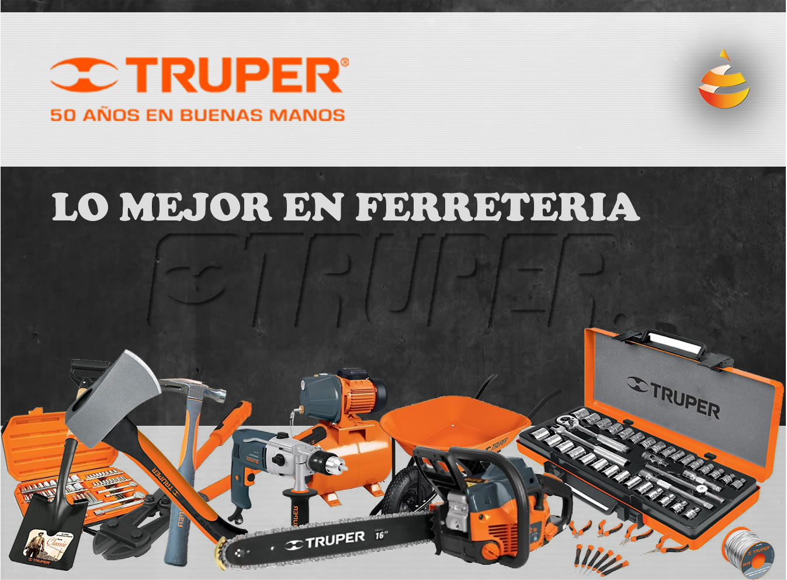

En 1942 se funda herramientas nacionales de S.A de C.V fabricando productos bajo las marcas “Herramientas Nacionales", Mercur y se introduce la marca Herna.
En 1970 se consolida toda la línea de productos True Temper, en 1975 se disuelve la alianza con la empresa Norteamericana y se introduce la marca Truper inicia exportaciones a Centroamérica.
1995 – 2000 Los importadores de productos ferreteros suspenden temporalmente sus importaciones por la crisis del 95. A pesar de la crisis Truper mantiene su programa de importaciones e inicia una etapa de gran crecimiento dejando muy por detrás a sus competidores.
2006 Se separa la fuerza de ventas en mayoristas y minoristas.Se alcanza un nivel histórico de entrega del 97.15%.
2009 Se introduce la marca Voltech para satisfacer necesidades en el área de la ferretería.
2010 Se introduce la marca Foset para satisfacer necesidades en el área de plomeria. Nace la marca Fiero para el manejo de productos para sujeción y productos de acero.
2011 Se introduce la marca Hermex para nuestra linea de cerrajería.
Trupper entra al mercado ferretero en Brasil.
2012 La empresa se expande a Alemania, Suiza, los Emiratos Árabes Unidos.